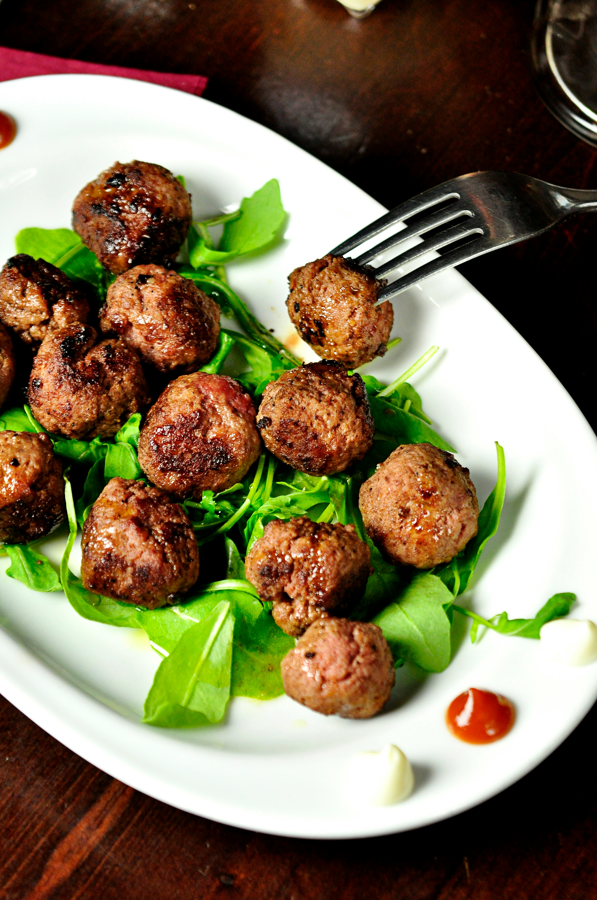

Josiah's Family Cookbook
Home
Stuffed Meatballs

Unsplash Image Credit
Description
These meatballs are stuffed with cheese, a lovely surprise that mixes well with pastas, marinara sauce, and a freshly grated parmesan.
This recipe can be made gluten free by substituting the breadcrumbs for a gluten free substitute. If none is available, add one more egg and more seasoning.
Ingredients
- 1 l/b Ground Beef
- 1 l/b Italian Sausage
- 1 cup Italian Breadcrumbs
- 2 Eggs, whole
- 1/4 cup Italian Seasoning
- 1 tbsp Salt
- 2 tsp Black Pepper
- 1 block Mozzarella Cheese
Steps
- Preheat the Oven to 400 degrees Farenheit.
- Cut the cheese into small cubes.
- Prepare an area to shape and fill meatballs.
- Mix together beef, sausage, breadcrumbs, eggs, and seasonings in a large bowl.
- Shape meatballs to fit comfortably in the palm.
- Place a cube of cheese into each meatball, covering the cheese completely.
- Bake in the Oven for 14 minutes.